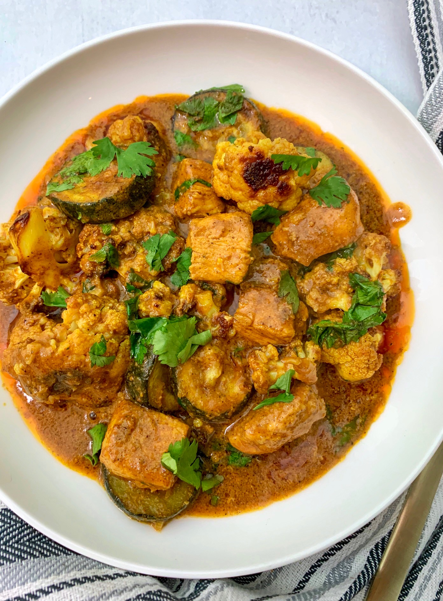

Indian Chicken Curry (Murgh Kari)

Indian chicken curry is a flavorful and aromatic dish made with chicken simmered in a spiced gravy.
The curry typically includes onions, tomatoes, garlic, ginger,and a blend of spices such as turmeric, cumin, coriander, and garam masala.
Variations exist across regions, with some using coconut milk, yogurt, or cream for richness.
It is commonly served with rice or Indian breads like naan or roti.
Ingredients
- 2 pounds skinless, boneless chicken breast halves
- 2 teaspoons salt
- ½ cup cooking oil
- ½ cups chopped onion
- 1 tablespoon minced garlic
- 1 ½ teaspoons minced fresh ginger root
- 1 tablespoon curry powder
- 1 teaspoon ground cumin
- 1 teaspoon ground turmeric
- 1 teaspoon ground coriander
- 1 teaspoon cayenne pepper
- 1 tablespoon water
- 1 (15 ounce) can crushed tomatoes
- 1 cup plain yogurt
- 1 tablespoon chopped fresh cilantro
- 1 teaspoon salt
- ½ cup water
- 1 teaspoon garam masala
- 1 tablespoon chopped fresh cilantro
- 1 tablespoon fresh lemon juice
Steps
- Gather all ingredients.
-
Sprinkle the chicken breasts with 2 teaspoons salt. Heat oil in a large skillet over high heat;
partially cook the chicken in the hot oil in batches until completely browned on all sides.
Transfer browned chicken breasts to a plate and set aside.
-
Reduce the heat to medium and add onion, garlic, and ginger to the oil remaining in the skillet.
Cook and stir until onion turns soft and translucent, 5 to 8 minutes.
Stir curry powder, cumin, turmeric, coriander, cayenne, and 1 tablespoon of water into the onion mixture;
allow to heat together for about 1 minute while stirring.
-
Add tomatoes, yogurt, 1 tablespoon chopped cilantro, and 1 teaspoon salt to the mixture;
stir to combine.
-
Return chicken breast to the skillet along with any juices on the plate. Pour
in 1/2 cup water and bring to a boil, turning the chicken to coat with the sauce.
Sprinkle garam masala and 1 tablespoon cilantro over the chicken.
-
Cover the skillet and simmer until chicken breasts are no longer pink in the
center and the juices run clear, about 20 minutes. An instant-read thermometer
inserted into the center should read at least 165 degrees F (74 degrees C).
Drizzle with lemon juice to serve.
Home